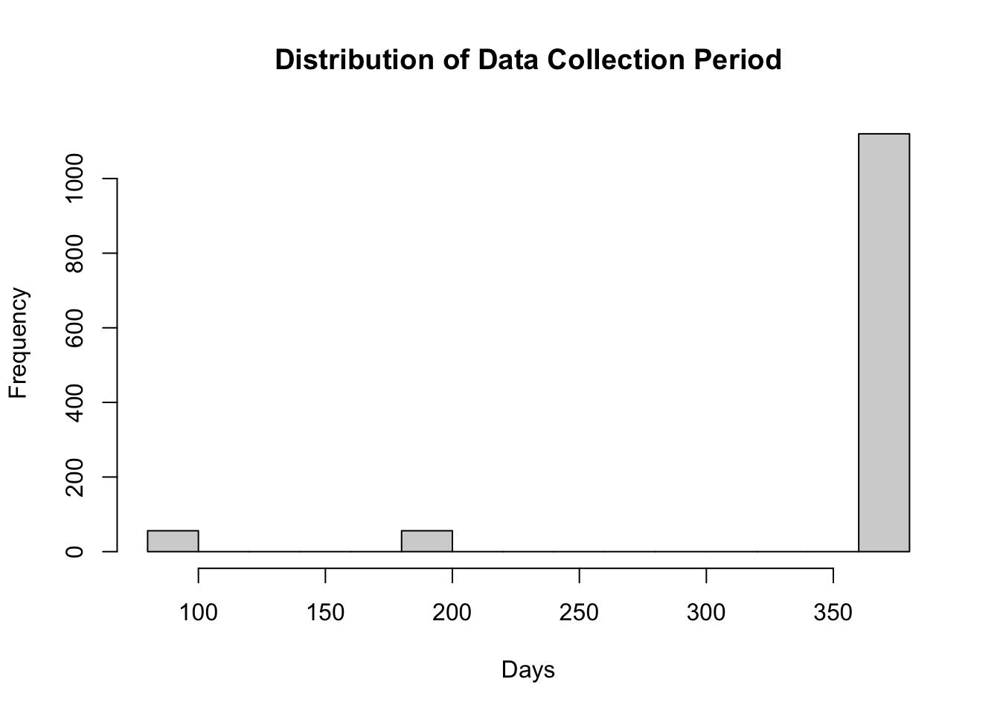
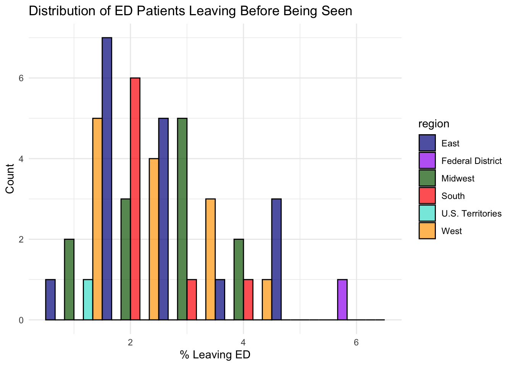
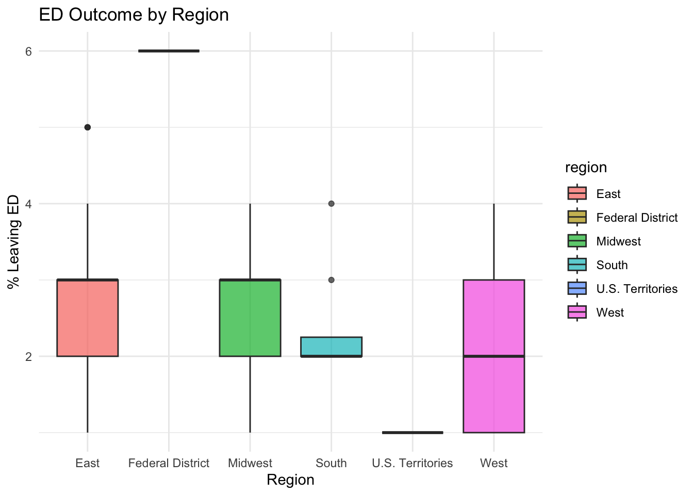
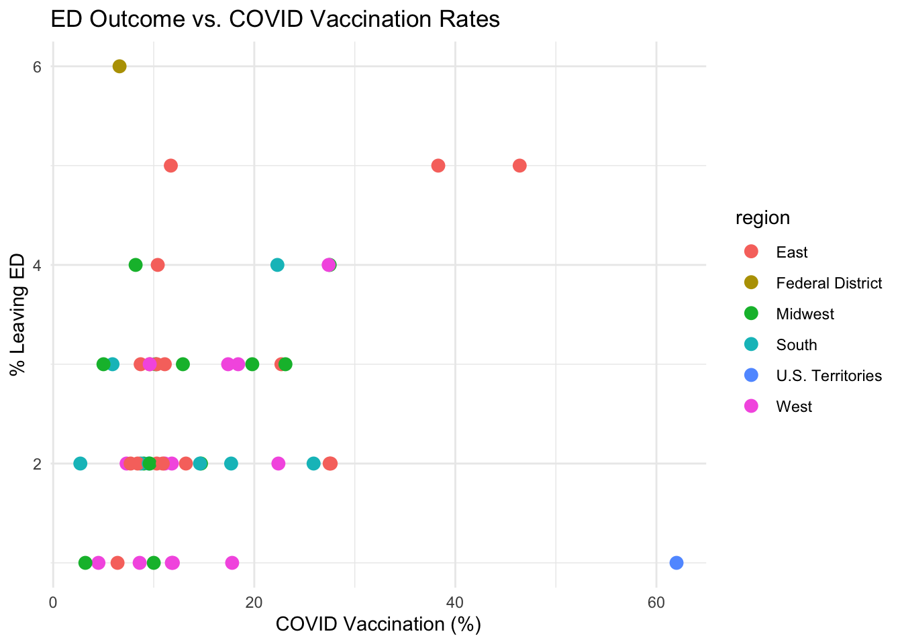
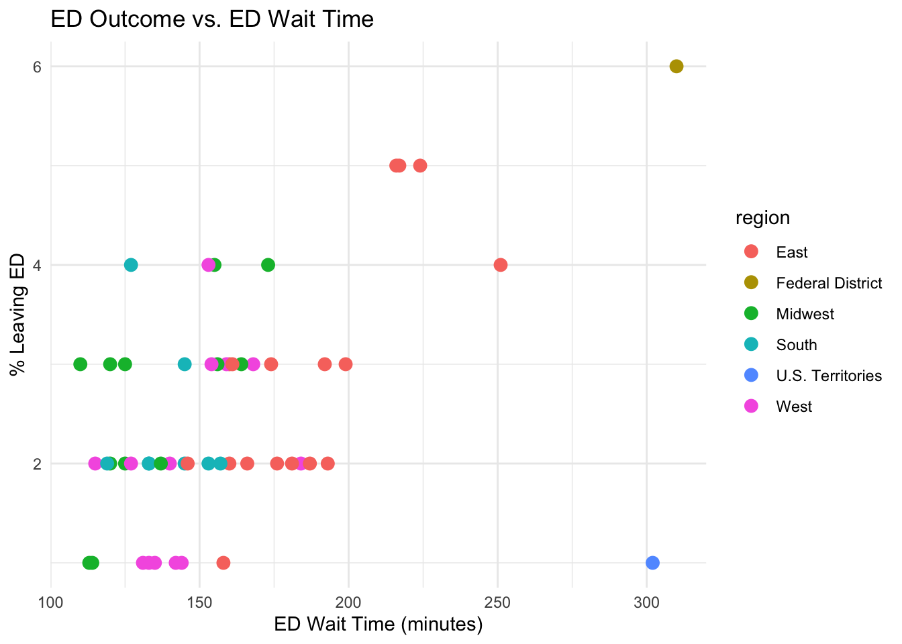
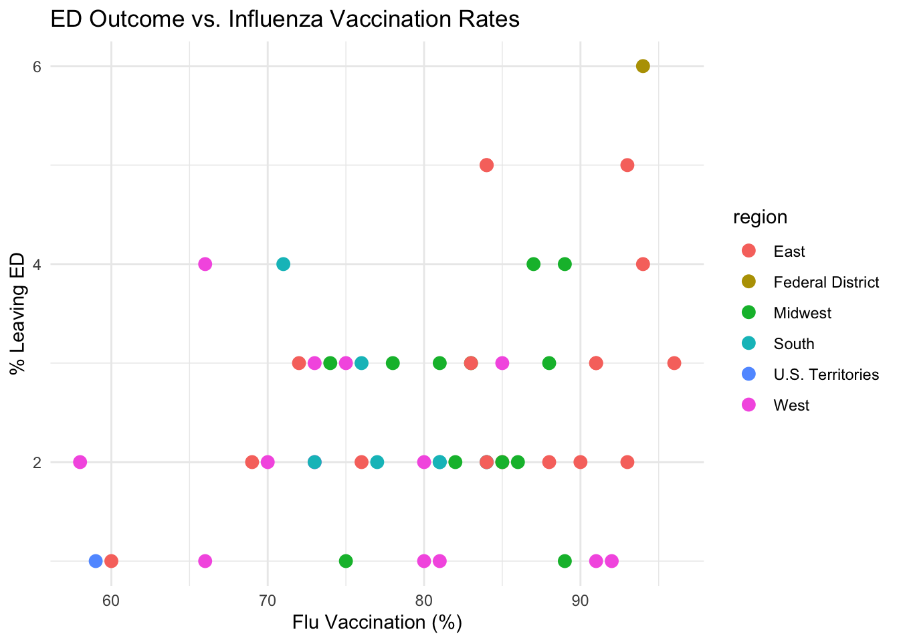
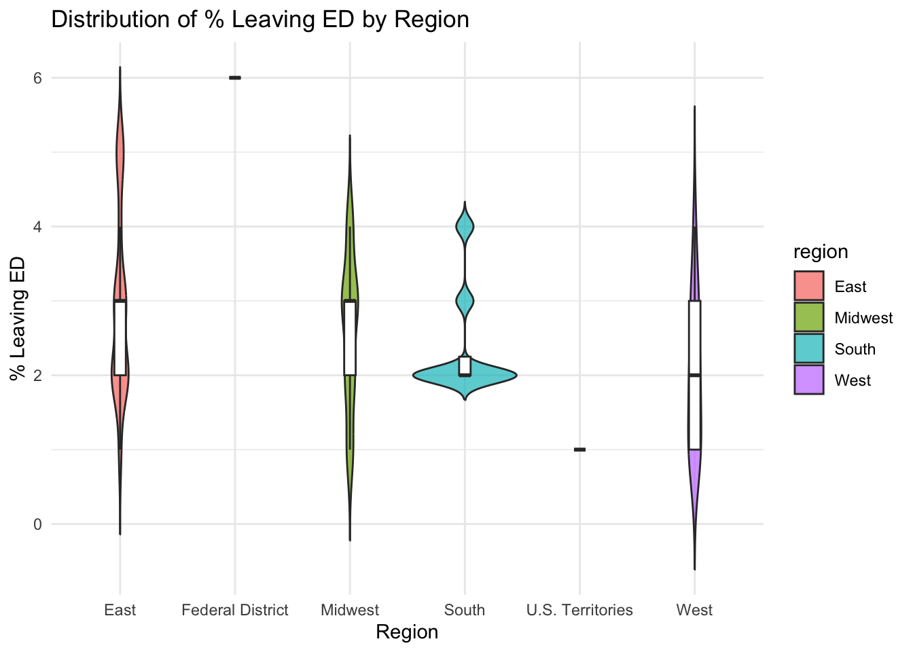
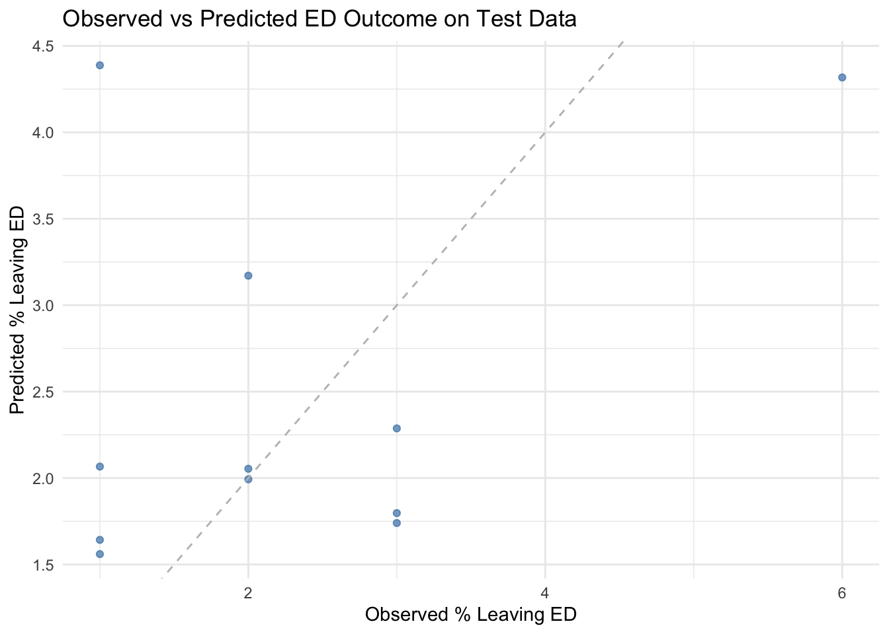

Attaching package: 'janitor'
The following objects are masked from 'package:stats':
chisq.test, fisher.test
library(xgboost)
Attaching package: 'xgboost'
The following object is masked from 'package:dplyr':
slice
library(usmap)
Import Tidytuesday dataset for week 14 of 2025.
# Import Tidytuesday dataset for week 14 of 2025 from GitHubcare_raw <- readr::read_csv('https://raw.githubusercontent.com/rfordatascience/tidytuesday/main/data/2025/2025-04-08/care_state.csv')
Rows: 1232 Columns: 8
── Column specification ────────────────────────────────────────────────────────
Delimiter: ","
chr (5): state, condition, measure_id, measure_name, footnote
dbl (1): score
date (2): start_date, end_date
ℹ Use `spec()` to retrieve the full column specification for this data.
ℹ Specify the column types or set `show_col_types = FALSE` to quiet this message.
# Display a summary and preview the dataglimpse(care_raw)
# A tibble: 100 × 8
state condition measure_id measure_name score footnote start_date end_date
<chr> <chr> <chr> <chr> <dbl> <chr> <date> <date>
1 AK Healthcar… HCP_COVID… Percentage … 7.3 <NA> 2024-01-01 2024-03-31
2 AK Healthcar… IMM_3 Healthcare … 80 <NA> 2023-10-01 2024-03-31
3 AK Emergency… OP_18b Average (me… 140 25, 26 2023-04-01 2024-03-31
4 AK Emergency… OP_18b_HI… Average tim… 157 25, 26 2023-04-01 2024-03-31
5 AK Emergency… OP_18b_LO… Average tim… 136 25, 26 2023-04-01 2024-03-31
6 AK Emergency… OP_18b_ME… Average tim… 136 25, 26 2023-04-01 2024-03-31
7 AK Emergency… OP_18b_VE… Average tim… NA 25, 26 2023-04-01 2024-03-31
8 AK Emergency… OP_18c Average (me… 196 25 2023-04-01 2024-03-31
9 AK Emergency… OP_18c_HI… Average tim… 230 25 2023-04-01 2024-03-31
10 AK Emergency… OP_18c_LO… Average tim… 182 25 2023-04-01 2024-03-31
# ℹ 90 more rows
# Convert date columns to Date typecare_raw <- care_raw %>%mutate(start_date =as.Date(start_date),end_date =as.Date(end_date) )# Compute the data collection period length and inspect its distributioncare_raw <- care_raw %>%mutate(period_length =as.numeric(end_date - start_date))summary(care_raw$period_length)
Min. 1st Qu. Median Mean 3rd Qu. Max.
90 364 365 344 365 365
hist(care_raw$period_length, main ="Distribution of Data Collection Period", xlab ="Days")

Data Wrangling & Restructuring for the Analysis
# Define the measure IDs for our analysistarget_measures <-c("HCP_COVID_19", "IMM_3", "OP_18b", "OP_22")# Aggregate the data: filter, group by state and measure_id, and calculate the mean scorecare_aggregated <- care_raw %>%filter(measure_id %in% target_measures) %>%group_by(state, measure_id) %>%summarise(mean_score =mean(score, na.rm =TRUE), .groups ="drop")# Pivot the data to a wide format: each state gets one row with separate columns for each measurecare_wide <- care_aggregated %>%pivot_wider(names_from = measure_id,values_from = mean_score )# Rename columns for ease of use and immediately filter out rows with missing outcome data ("left")care_mod <- care_wide %>%rename(covid = HCP_COVID_19, # Percentage of healthcare personnel vaccinated against COVID-19flu = IMM_3, # Percentage of healthcare workers given the influenza vaccinewait = OP_18b, # Average time patients spend in the EDleft = OP_22 # Percentage of patients who left the ED before being seen ) %>%# **Filtering step**: Remove rows where the outcome 'left' is missingfilter(!is.na(left))# Now your data (care_mod) is ready for further analysisglimpse(care_mod)
# Define state groupings by regioneast_states <-c("ME","NH","VT","MA","RI","CT","NY","NJ","PA","MD","DE","VA","NC","SC","GA","FL","WV")midwest_states <-c("OH","MI","IN","IL","WI","MN","IA","MO","ND","SD","NE","KS")south_states <-c("KY","TN","MS","AL","OK","TX","AR","LA")west_states <-c("MT","ID","WY","CO","NM","AZ","UT","NV","CA","OR","WA","AK","HI")federal_district <-c("DC")us_territories <-c("AS", "GU", "MP", "PR", "VI")# Create a new region column based on the state abbreviationcare_mod <- care_mod %>%mutate(region =case_when( state %in% east_states ~"East", state %in% midwest_states ~"Midwest", state %in% south_states ~"South", state %in% west_states ~"West", state %in% federal_district ~"Federal District", state %in% us_territories ~"U.S. Territories",TRUE~"Other" ))# Check that region classification looks correcttable(care_mod$region)
East Federal District Midwest South
17 1 12 8
U.S. Territories West
1 13
Exploratory Data Analysis (EDA)
# Visualizing Distributions by Region# Histogram and density plots for the outcome variable "left"p_left <-ggplot(care_mod, aes(x = left, fill = region)) +geom_histogram(binwidth =1, color ="black", alpha =0.7, position ="dodge") +scale_fill_manual(values =c("East"="darkblue","Midwest"="darkgreen","South"="red","West"="orange","Federal District"="purple","U.S. Territories"="turquoise","Other"="yellow" )) +labs(title ="Distribution of ED Patients Leaving Before Being Seen", x ="% Leaving ED", y ="Count") +theme_minimal()plot(p_left)

Boxplot to compare ‘left’ across regions
p_box <-ggplot(care_mod, aes(x = region, y = left, fill = region)) +geom_boxplot(alpha =0.7) +labs(title ="ED Outcome by Region", x ="Region", y ="% Leaving ED") +theme_minimal()plot(p_box)

The boxplot indicates that the Federal District has the highest percentage of patients leaving the ED, while the South and U.S. Territories show the lowest percentages. Midwest and East regions are moderate, though the Midwest displays slightly greater variability. Outliers in the East and South suggest some states in these regions have notably higher percentages.
Exploring Relationships Between Predictors and Outcome
# Scatterplots of outcome against each predictor colored by regionp_covid <-ggplot(care_mod, aes(x = covid, y = left, color = region)) +geom_point(size =3) +labs(title ="ED Outcome vs. COVID Vaccination Rates", x ="COVID Vaccination (%)", y ="% Leaving ED") +theme_minimal()plot(p_covid)

The scatterplot shows that most regions cluster between 10-20% vaccination with varying ED outcomes. Notably, U.S. Territories show the highest vaccination rate (~60%) but have low ED departure percentages, while the Federal District and some states in the East and Midwest have higher ED departure percentages at lower vaccination rates.
p_wait <-ggplot(care_mod, aes(x = wait, y = left, color = region)) +geom_point(size =3) +labs(title ="ED Outcome vs. ED Wait Time", x ="ED Wait Time (minutes)", y ="% Leaving ED") +theme_minimal()plot(p_wait)

This scatter plot shows that longer ED wait times tend to be associated with higher percentages of patients leaving before being seen. Although there’s still some spread, the upward pattern suggests a loose positive relationship between wait time and patients leaving the ED.
p_flu <-ggplot(care_mod, aes(x = flu, y = left, color = region)) +geom_point(size =3) +labs(title ="ED Outcome vs. Influenza Vaccination Rates", x ="Flu Vaccination (%)", y ="% Leaving ED") +theme_minimal()plot(p_flu)

This scatter plot shows no clear pattern between flu vaccination rates and the percentage of patients leaving the ED. The points are widely scattered across all vaccination levels, suggesting little to no relationship between the two variables.
# Violin Plots by Region for the outcome 'left'ggplot(care_mod, aes(x = region, y = left, fill = region)) +geom_violin(trim =FALSE, alpha =0.7) +geom_boxplot(width =0.1, fill ="white", outlier.shape =NA) +labs(title ="Distribution of % Leaving ED by Region",x ="Region", y ="% Leaving ED") +theme_minimal()
Warning: Groups with fewer than two datapoints have been dropped.
ℹ Set `drop = FALSE` to consider such groups for position adjustment purposes.
Groups with fewer than two datapoints have been dropped.
ℹ Set `drop = FALSE` to consider such groups for position adjustment purposes.

# US Map Visualization for the Outcome Variable# Prepare state-level data for mapping: we assume each state has only one row in care_modstate_map_data <- care_mod %>%select(state, left)plot_usmap(data = state_map_data, values ="left", color ="white") +scale_fill_continuous(name ="% Leaving ED", low ="lightblue", high ="darkblue", na.value ="grey50" ) +labs(title ="Average % of Patients Leaving ED by State") +theme(legend.position ="right")
# Preparing Data & Splitting# Set a reproducible seed and split the data (80% training, 20% testing)set.seed(2025)data_split <-initial_split(care_mod, prop =0.8)train_data <-training(data_split)test_data <-testing(data_split)# Create a preprocessing recipe. The outcome is 'left', and predictors include 'covid', 'flu', 'wait', and 'region'# Here, step_dummy() will create dummy variables for the categorical 'region'model_recipe <-recipe(left ~ covid + flu + wait + region, data = train_data) %>%step_dummy(all_nominal_predictors()) %>%step_normalize(all_numeric_predictors()) # Standardize numerical predictors# Inspect the recipesummary(model_recipe)
# A tibble: 5 × 4
variable type role source
<chr> <list> <chr> <chr>
1 covid <chr [2]> predictor original
2 flu <chr [2]> predictor original
3 wait <chr [2]> predictor original
4 region <chr [3]> predictor original
5 left <chr [2]> outcome original
Fitting Multiple Models Using Tidymodels
Linear Regression Model
# Set up a linear regression model specificationlin_spec <-linear_reg() %>%set_engine("lm") %>%set_mode("regression")lin_workflow <-workflow() %>%add_recipe(model_recipe) %>%add_model(lin_spec)# Set up cross-validation (5-fold CV)cv_folds <-vfold_cv(train_data, v =5)# Fit the linear regression model with cross-validationlin_res <-fit_resamples( lin_workflow,resamples = cv_folds,metrics =metric_set(rmse, rsq))# View cross-validation metricscollect_metrics(lin_res)
# A tibble: 2 × 6
.metric .estimator mean n std_err .config
<chr> <chr> <dbl> <int> <dbl> <chr>
1 rmse standard 0.841 5 0.0890 Preprocessor1_Model1
2 rsq standard 0.407 5 0.123 Preprocessor1_Model1
Linear Regression Model Performance (Cross-Validation) The cross-validation results for the linear regression model show an RMSE of about 0.84 and an R-squared of approximately 0.41. This means that on average, the model’s predictions are off by 0.84 percentage points and it explains around 41% of the variability in the ED outcome. These figures indicate moderate effectiveness in capturing the relationships among the predictors, suggesting that the combination of vaccination rates, wait times, and region has a meaningful, though not complete, predictive influence on the outcome.
Random Forest Model (with Tuning)
# Set up a random forest model specification with tunable parametersrf_spec <-rand_forest(mode ="regression",mtry =tune(), # predictors sampled at each splitmin_n =tune(), # minimum number of observations per nodetrees =500) %>%set_engine("ranger")rf_workflow <-workflow() %>%add_recipe(model_recipe) %>%add_model(rf_spec)# Finalize the tuning parameters using the training data so that mtry (and others) get their proper rangerf_params <-parameters(rf_spec) %>%finalize(train_data)
Warning: `parameters.model_spec()` was deprecated in tune 0.1.6.9003.
ℹ Please use `hardhat::extract_parameter_set_dials()` instead.
# Create a tuning grid for hyperparameters using the finalized parametersrf_grid <-grid_random(rf_params, size =10)# Tune the random forest using 5-fold CVrf_tune_results <-tune_grid( rf_workflow,resamples = cv_folds,grid = rf_grid,metrics =metric_set(rmse))
→ A | warning: ! 40 samples were requested but there were 32 rows in the data.
ℹ 32 samples will be used.
There were issues with some computations A: x1
→ B | warning: ! 40 samples were requested but there were 33 rows in the data.
ℹ 33 samples will be used.
There were issues with some computations A: x1
There were issues with some computations A: x1 B: x2
There were issues with some computations A: x1 B: x4
# Identify the best hyperparameter settings based on RMSEbest_rf <-select_best(rf_tune_results, metric ="rmse")# Finalize the random forest workflow with the best settingsfinal_rf_workflow <-finalize_workflow(rf_workflow, best_rf)# Re-evaluate the finalized model using CVrf_final_res <-fit_resamples( final_rf_workflow,resamples = cv_folds,metrics =metric_set(rmse, rsq))collect_metrics(rf_final_res)
# A tibble: 2 × 6
.metric .estimator mean n std_err .config
<chr> <chr> <dbl> <int> <dbl> <chr>
1 rmse standard 0.865 5 0.0778 Preprocessor1_Model1
2 rsq standard 0.391 5 0.0855 Preprocessor1_Model1
Random Forest Model Performance (Cross-Validation) The random forest model has an RMSE of about 0.86, which is slightly higher than the linear regression model, meaning its prediction error is a bit worse. The R-squared is around 0.39, so it explains roughly 39% of the variation in the outcome. Overall, it performs similarly to linear regression but with a tad less accuracy.
Gradient Boosting Model (with Tuning)
# Set up a gradient boosting model specificationgb_spec <-boost_tree(mode ="regression",trees =500,learn_rate =0.1,tree_depth =tune() # tune the depth) %>%set_engine("xgboost")gb_workflow <-workflow() %>%add_recipe(model_recipe) %>%add_model(gb_spec)# Create a tuning grid for the tree_depth parametergb_grid <-grid_random(parameters(gb_spec),size =10)# Tune the gradient boosting model using 5-fold CVgb_tune_results <-tune_grid( gb_workflow,resamples = cv_folds,grid = gb_grid,metrics =metric_set(rmse))# Select the best performing modelbest_gb <-select_best(gb_tune_results, metric ="rmse")# Finalize the workflow with these best parametersfinal_gb_workflow <-finalize_workflow(gb_workflow, best_gb)# Evaluate the finalized gradient boosting modelgb_final_res <-fit_resamples( final_gb_workflow,resamples = cv_folds,metrics =metric_set(rmse, rsq))collect_metrics(gb_final_res)
# A tibble: 2 × 6
.metric .estimator mean n std_err .config
<chr> <chr> <dbl> <int> <dbl> <chr>
1 rmse standard 1.09 5 0.0600 Preprocessor1_Model1
2 rsq standard 0.230 5 0.0789 Preprocessor1_Model1
Gradient Boosting Model Performance (Cross-Validation) The gradient boosting model has the highest RMSE at about 1.09, meaning it has the largest prediction error of the three models. Its R-squared is the lowest at roughly 0.23, so it explains only 23% of the variation in ED outcomes. This model underperforms compared to both linear regression and random forest.
Final Model Selection & Test Evaluation
# Fit the selected (for example, gradient boosting) model on the entire training set and evaluate on the test setfinal_fit <-last_fit(final_gb_workflow, split = data_split)
→ A | warning: ! There are new levels in `region`: "Federal District" and "U.S. Territories".
ℹ Consider using step_novel() (`?recipes::step_novel()`) before `step_dummy()`
to handle unseen values.
# Extract and print the test set performance metricstest_metrics <-collect_metrics(final_fit)print(test_metrics)
# A tibble: 2 × 4
.metric .estimator .estimate .config
<chr> <chr> <dbl> <chr>
1 rmse standard 1.38 Preprocessor1_Model1
2 rsq standard 0.156 Preprocessor1_Model1
# Get predictions on the test settest_predictions <-collect_predictions(final_fit)# Plot observed vs. predicted values for the test setggplot(test_predictions, aes(x = left, y = .pred)) +geom_point(color ="steelblue", alpha =0.7) +geom_abline(slope =1, intercept =0, linetype ="dashed", color ="gray") +labs(title ="Observed vs Predicted ED Outcome on Test Data",x ="Observed % Leaving ED", y ="Predicted % Leaving ED") +theme_minimal()

Final Model Selection & Test Evaluation In the final model selection phase, the chosen model—illustrated here by the gradient boosting model—was evaluated on the test set, resulting in an RMSE of approximately 1.38 and an R² of about 0.16. This test set performance is lower than that seen in cross-validation, suggesting that while the model captures some trends in the training data, it may have issues with generalizability. The observed versus predicted plot further illustrates that, although predictions roughly follow the actual outcomes, there is considerable deviation, emphasizing that additional factors might be affecting ED performance.
Discussion:
After comparing the models, I chose the linear regression model as the overall best fit for this analysis. Although it didn’t have the absolute lowest RMSE or highest R-squared by a wide margin, it consistently performed well, had the most interpretable results, and showed reasonable accuracy without overfitting. Compared to the gradient boosting model, which struggled with both training and test data, and the random forest model, which offered no clear improvement, the linear model provided a simpler and more stable way to understand the predictors of ED departure rates.
To honestly assess the linear model’s quality, we look at the test evaluation from the gradient boosting model (which we finalized in code). The final RMSE was 1.38 and R-squared was only 0.16, confirming that none of the models—including the more complex ones—generalized particularly well. This gives us some caution. While our chosen linear model had decent performance during cross-validation (RMSE ~0.84, R² ~0.41), the weak generalization means there’s likely noise or missing variables we didn’t capture.
Throughout the analysis, we explored how regional differences, ED wait times, and vaccination rates related to the percentage of patients leaving the ED before being seen. We saw that regions like the Federal District and parts of the Midwest had higher departure rates, while U.S. Territories had consistently low values. Among predictors, ED wait time appeared to have the strongest visible relationship with the outcome—states with longer wait times generally had more patients leaving. On the other hand, COVID and flu vaccination rates didn’t show strong or clear trends in relation to the outcome.
Overall, we learned that where you are and how long you wait seem to matter more for ED departures than vaccination coverage. While our model can’t explain all the variation, it points us toward factors that are more operational and system-based than medical. If this were extended, we might want to bring in other hospital-level or demographic data to get a more complete picture.
A helpful summary plot would be the scatter plot of ED wait time vs. ED outcome, since it most clearly illustrates the strongest relationship we found.